Candidate List 20260725Last night — ZTF: 3,726 passed basic cuts (215 young) · LSST: 0 passed basic cuts (0 young)Previous Day Next Day
Section 1: New Sources (age<1d) Section 2: Old (1-5d) sources observed last nightplaceholder
Section 1: New Afterglow/FBOT Cands Last Night (7)
1. [ZTF] ZTF26abjlges (FBOT?) [Back to Top] [Share] [Trigger Swift] [Fritz Alert] [Fritz Source] [Lasair]RA, Dec: 270.3857, 31.23942 18h 1m32.57s, 31d14m21.92sGalactic (l, b): 57.25555, 23.63065 ext(g-r) = 0.046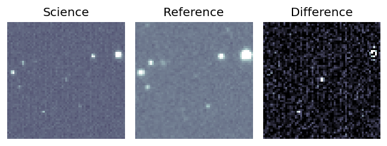
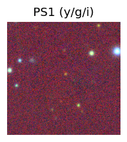
TESS: Sectors [ 40 52 53 79 80 118]
PS1: 0 sources in 3 arcsec
LegacySurvey: 1 sources in 3 arcsec Closest: d = 2.11 arcsec, 339.3 deg (east of north) photoz=0.31 (68% bounds 0.04, 0.86), type=PSF peak abs mag = -20.82 (68% bounds -16.18, -23.47)
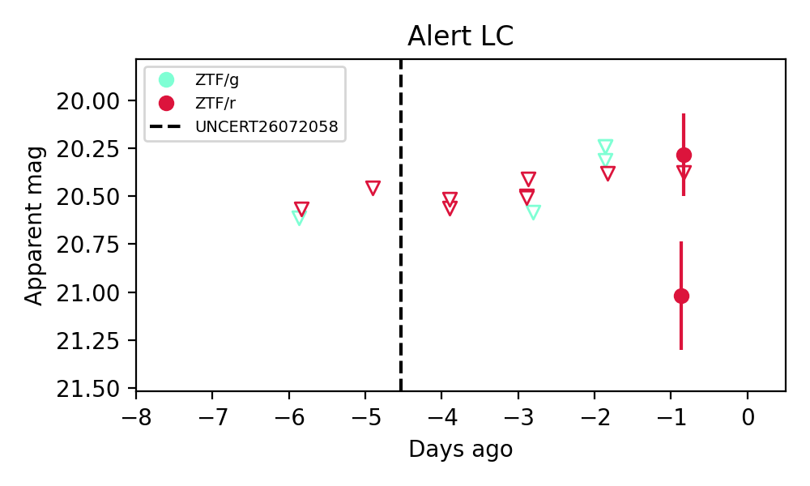
Rise Rate:
r: 22.34 mag/day
Fade Rate:
2. [ZTF] ZTF26abjndup (Afterglow?) [Back to Top] [Share] [Trigger Swift] [Fritz Alert] [Fritz Source] [Lasair]RA, Dec: 295.97647, 4.70116 19h43m54.35s, 4d42m4.16sGalactic (l, b): 43.21371, -9.43466 ext(g-r) = 0.229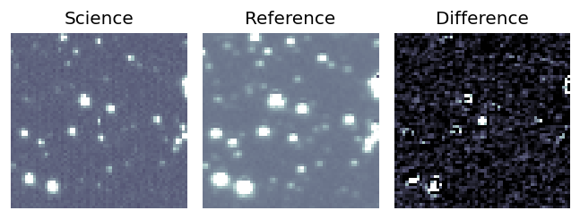
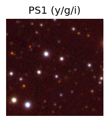
TESS: Sectors [54 81]
PS1: 1 source in 3 arcsec Closest: d = 1.71 arcsec photoz=0.26+/-0.14 peak abs mag = -21.46
LegacySurvey: 0 sources in 3 arcsec
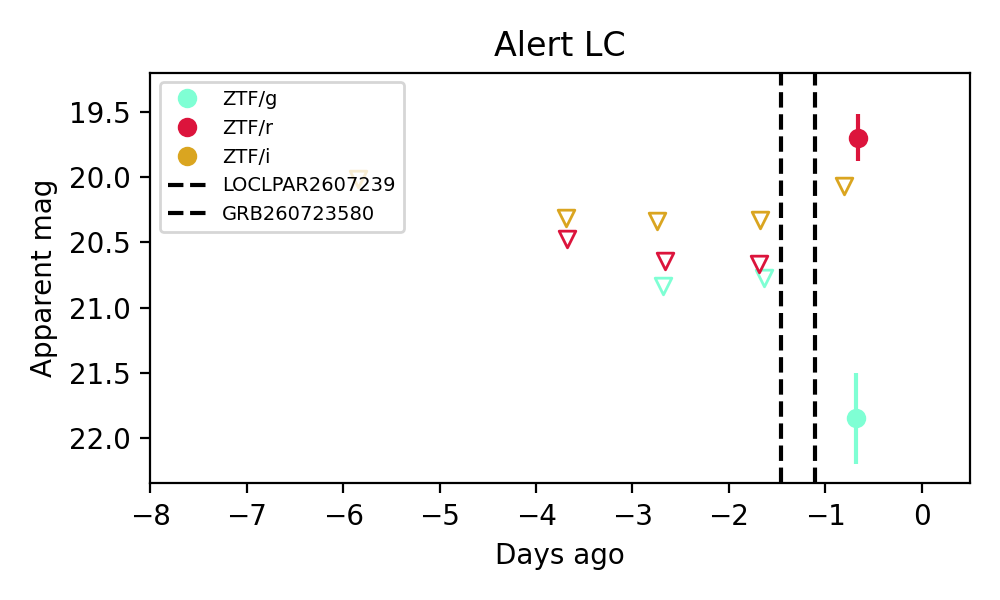
Extinction-corrected gr color:
From alerts: 1.92 +/- 0.39 mag
Extinction-corrected gi color:
From alerts: 1.43 +/- 99 mag
Extinction-corrected ri color:
From alerts: -0.49 +/- 99 mag
Consistent with synchrotron, g-r>0!
Rise Rate:
r: 0.94 mag/day
Fade Rate:
3. [ZTF] ZTF26abjnfkh (Afterglow?) [Back to Top] [Share] [Trigger Swift] [Fritz Alert] [Fritz Source] [Lasair]RA, Dec: 298.31346, 5.32332 19h53m15.23s, 5d19m23.95sGalactic (l, b): 44.90684, -11.17597 ext(g-r) = 0.173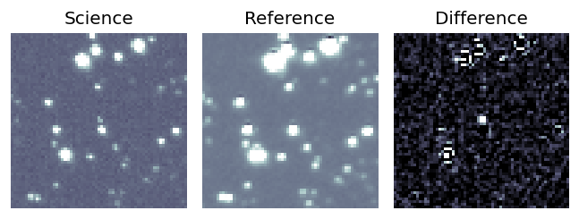
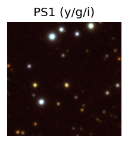
TESS: Sectors [54 81]
PS1: 1 source in 3 arcsec Closest: d = 3.59 arcsec photoz=0.47+/-0.80 peak abs mag = -22.86
LegacySurvey: 0 sources in 3 arcsec
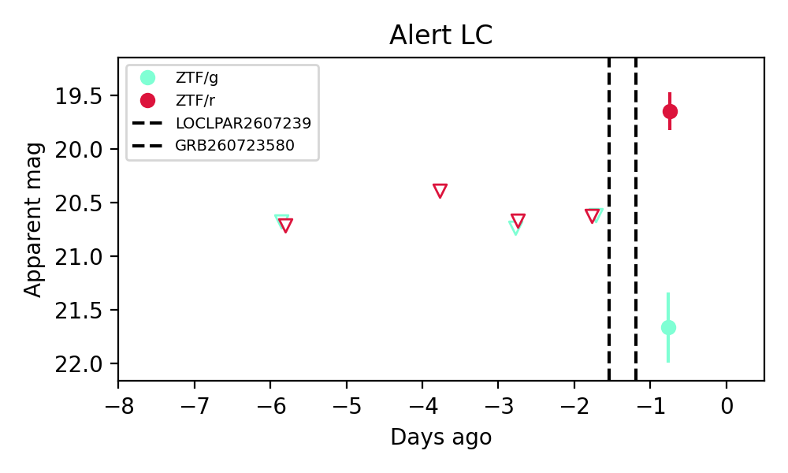
Extinction-corrected gr color:
From alerts: 1.85 +/- 0.37 mag
Consistent with synchrotron, g-r>0!
Rise Rate:
r: 0.95 mag/day
Fade Rate:
4. [ZTF] ZTF26abjohao (Afterglow?) [Back to Top] [Share] [Trigger Swift] [Fritz Alert] [Fritz Source] [Lasair]RA, Dec: 325.45824, 17.19607 21h41m49.98s, 17d11m45.85sGalactic (l, b): 71.36216, -26.14608 ext(g-r) = 0.136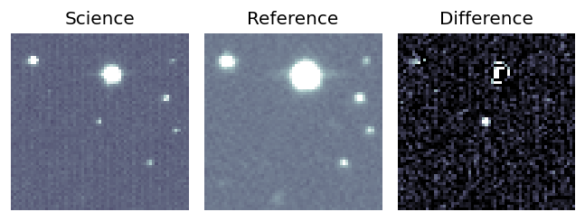
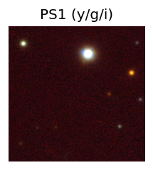
TESS: Sectors [55 82]
PS1: 0 sources in 3 arcsec
LegacySurvey: 1 sources in 3 arcsec Closest: d = 2.29 arcsec, 335.7 deg (east of north) photoz=0.95 (68% bounds 0.81, 1.08), type=PSF peak abs mag = -24.03 (68% bounds -23.6, -24.37)
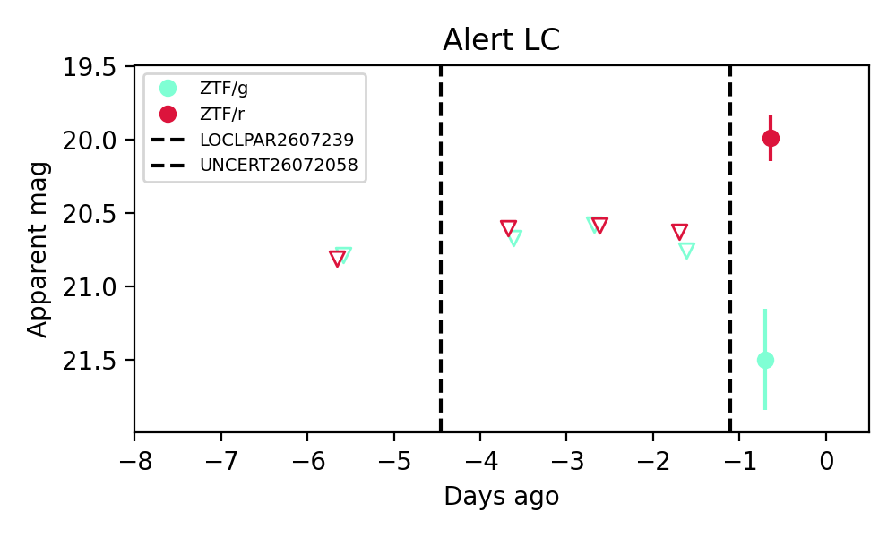
Extinction-corrected gr color:
From alerts: 1.37 +/- 0.38 mag
Consistent with synchrotron, g-r>0!
Rise Rate:
r: 0.6 mag/day
Fade Rate:
5. [ZTF] ZTF26abjoldb (Afterglow?) [Back to Top] [Share] [Trigger Swift] [Fritz Alert] [Fritz Source] [Lasair]RA, Dec: 302.39613, 61.29356 20h 9m35.07s, 61d17m36.81sGalactic (l, b): 95.00144, 14.8913 ext(g-r) = 0.207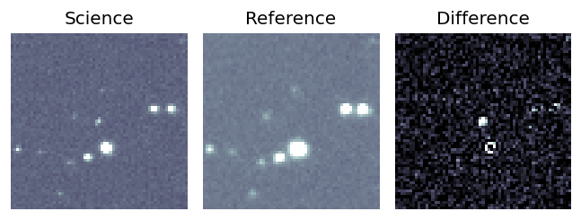
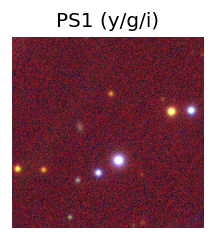
TESS: Sectors [ 14 15 16 17 21 24 41 51 55 56 57 58 75 76 77 78 82 83
84 85 120 121]
SDSS (<15 kpc):Found SDSS phot-z: z=0.18; peak abs mag = -20.48
PS1: 1 source in 3 arcsec Closest: d = 9.00 arcsec photoz=0.33+/-0.06 peak abs mag = -21.95
LegacySurvey: 0 sources in 3 arcsec
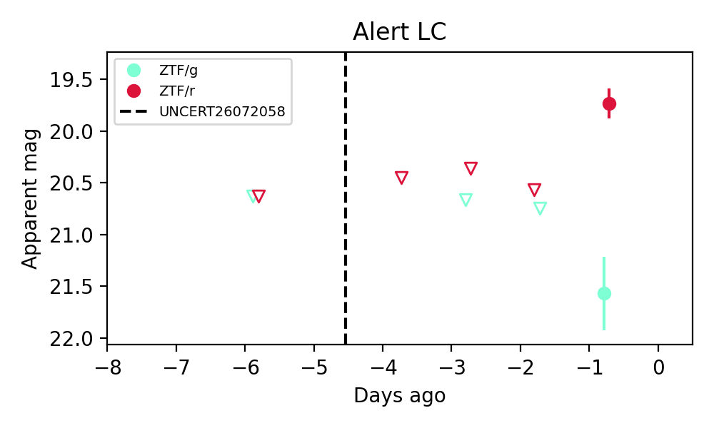
Extinction-corrected gr color:
From alerts: 1.63 +/- 0.38 mag
Consistent with synchrotron, g-r>0!
Rise Rate:
r: 0.77 mag/day
Fade Rate:
6. [ZTF] ZTF26abjouit (Afterglow?) [Back to Top] [Share] [Trigger Swift] [Fritz Alert] [Fritz Source] [Lasair]RA, Dec: 0.35247, -15.84649 0h 1m24.59s, -15d-50m-47.35sGalactic (l, b): 74.5721, -73.81357 ext(g-r) = 0.03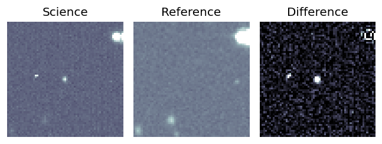
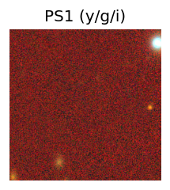
TESS: Sectors [ 2 29 69 107]
PS1: 0 sources in 3 arcsec
LegacySurvey: 0 sources in 3 arcsec
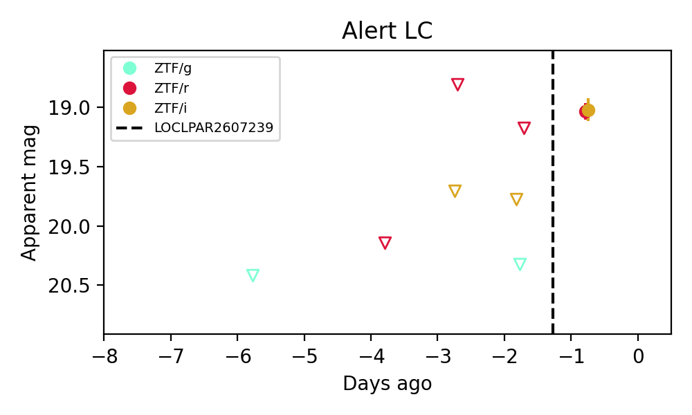
Extinction-corrected ri color:
From alerts: -0.0 +/- 0.12 mag
Consistent with synchrotron, g-r>0!
Rise Rate:
r: 0.37 mag/day
i: 0.7 mag/day
Fade Rate:
7. [ZTF] ZTF26abjpapd (Afterglow?) [Back to Top] [Share] [Trigger Swift] [Fritz Alert] [Fritz Source] [Lasair]RA, Dec: 4.29574, 0.35983 0h17m10.98s, 0d21m35.40sGalactic (l, b): 104.8653, -61.30456 WARNING: -1.38 deg from ecliptic plane ext(g-r) = 0.025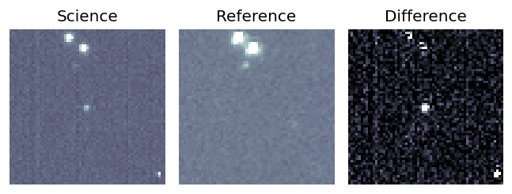
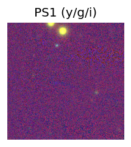
TESS: Sectors [42 70]
PS1: 0 sources in 3 arcsec
LegacySurvey: 1 sources in 3 arcsec Closest: d = 7.98 arcsec, 103.4 deg (east of north) photoz=1.08 (68% bounds 0.61, 1.78), type=PSF peak abs mag = -25.07 (68% bounds -23.55, -26.39)
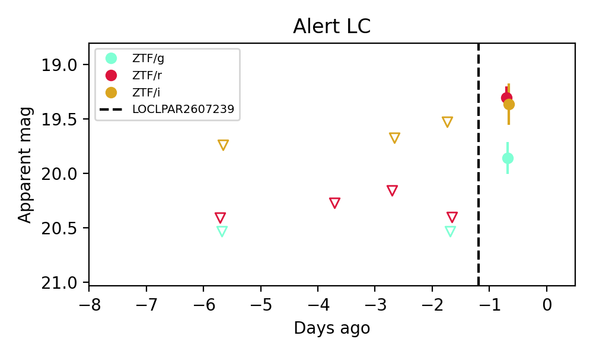
Extinction-corrected gr color:
From alerts: 0.53 +/- 0.18 mag
Extinction-corrected gi color:
From alerts: 0.46 +/- 0.24 mag
Extinction-corrected ri color:
From alerts: -0.07 +/- 0.22 mag
Consistent with synchrotron, g-r>0!
Rise Rate:
g: 0.67 mag/day
r: 1.15 mag/day
Fade Rate:
Section 2: Older Sources Observed Last Night (27)
0. [ZTF] ZTF26abhycxx (FBOT?) [Back to Top] [Share] [Trigger Swift] [Fritz Alert] [Fritz Source] [Lasair]RA, Dec: 280.99357, 24.37805 18h43m58.46s, 24d22m40.97sGalactic (l, b): 54.17126, 12.39233 ext(g-r) = 0.127


TESS: Sectors [ 26 40 53 54 80 118 119]
PS1: 1 source in 3 arcsec Closest: d = 8.74 arcsec photoz=0.42+/-0.06 peak abs mag = -25.66
LegacySurvey: 0 sources in 3 arcsec

Extinction-corrected gr color:
From alerts: -0.37 +/- 0.06 mag
Rise Rate:
g: 2.02 mag/day
r: 2.04 mag/day
Fade Rate:
g: 0.05 mag/day
r: 0.08 mag/day
1. [ZTF] ZTF26abhzfgq (Afterglow?) [Back to Top] [Share] [Trigger Swift] [Fritz Alert] [Fritz Source] [Lasair]RA, Dec: 227.65557, 8.68403 15h10m37.34s, 8d41m2.49sGalactic (l, b): 10.24869, 52.30866 ext(g-r) = 0.039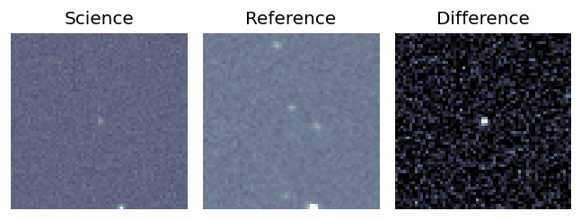
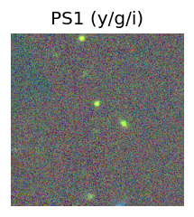
TESS: Sectors 51
SDSS (<15 kpc):Found SDSS phot-z: z=0.64; peak abs mag = -25.57
PS1: 0 sources in 3 arcsec
LegacySurvey: 1 sources in 3 arcsec Closest: d = 3.87 arcsec, 247.3 deg (east of north) photoz=0.73 (68% bounds 0.5, 1.05), type=REX peak abs mag = -25.76 (68% bounds -24.78, -26.74)
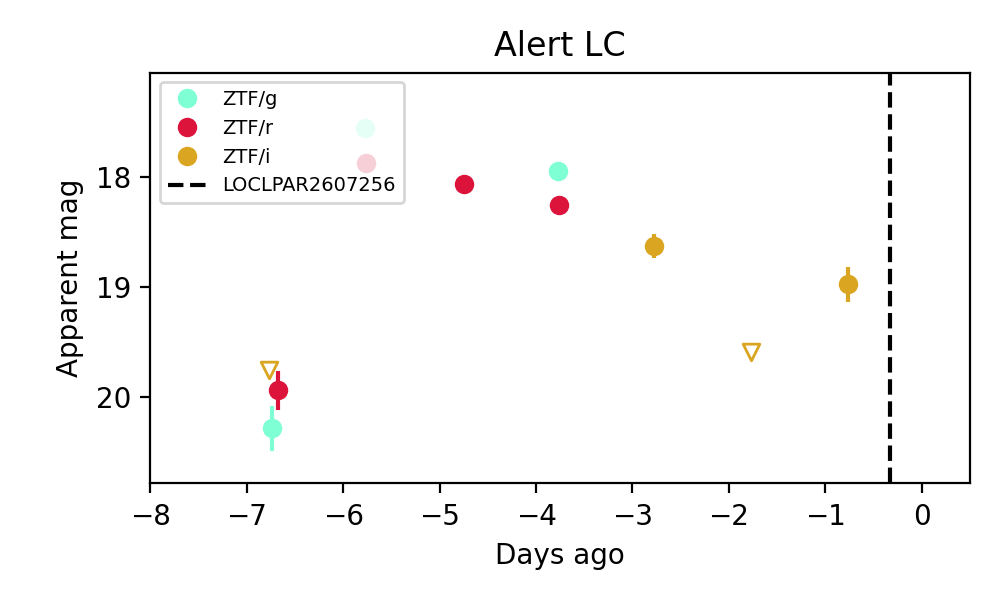
Extinction-corrected gr color:
From alerts: -0.35 +/- 0.1 mag
Extinction-corrected gi color:
From alerts: 0.47 +/- 99 mag
Extinction-corrected ri color:
From alerts: 0.17 +/- 99 mag
Rise Rate:
g: 0.98 mag/day
r: 0.84 mag/day
i: 0.28 mag/day
Fade Rate:
i: 0.97 mag/day
2. [ZTF] ZTF26abipuax (FBOT?) [Back to Top] [Share] [Trigger Swift] [Fritz Alert] [Fritz Source] [Lasair]RA, Dec: 278.37724, 21.28714 18h33m30.54s, 21d17m13.69sGalactic (l, b): 50.26407, 13.31759 ext(g-r) = 0.23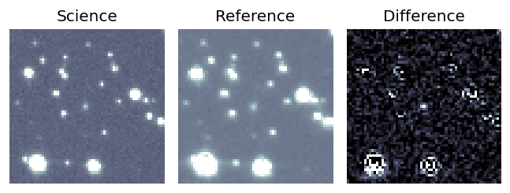
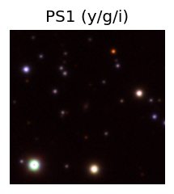

TESS: Sectors [ 26 40 53 80 118 119]
SDSS (<15 kpc):Found SDSS phot-z: z=0.12; peak abs mag = -19.74
PS1: 1 source in 3 arcsec Closest: d = 0.67 arcsec photoz=0.18+/-0.01 peak abs mag = -20.80
LegacySurvey: 0 sources in 3 arcsec
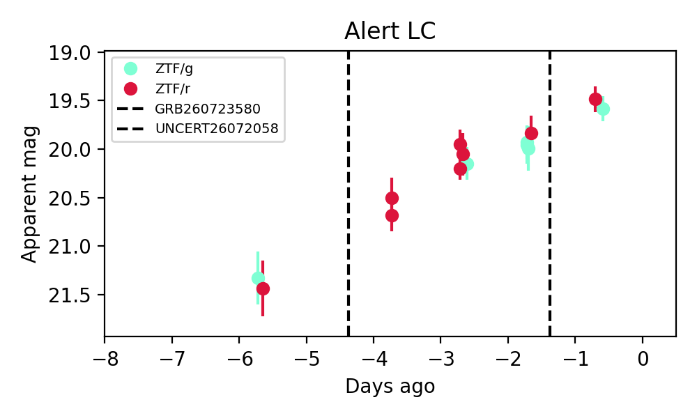
Extinction-corrected gr color:
From alerts: -0.13 +/- 0.19 mag
Consistent with synchrotron, g-r>0!
Rise Rate:
g: 0.33 mag/day
r: 0.37 mag/day
Fade Rate:
3. [ZTF] ZTF26abirwwz (Afterglow?) [Back to Top] [Share] [Trigger Swift] [Fritz Alert] [Fritz Source] [Lasair]RA, Dec: 298.80799, 37.20251 19h55m13.92s, 37d12m9.05sGalactic (l, b): 72.72462, 4.64158 ext(g-r) = 0.405

TESS: Sectors [ 14 15 54 55 74 75 81 82 119 120]
PS1: 0 sources in 3 arcsec
LegacySurvey: 0 sources in 3 arcsec

Extinction-corrected gr color:
From alerts: -0.61 +/- 0.07 mag
Rise Rate:
g: 0.34 mag/day
r: 1.36 mag/day
Fade Rate:
r: 0.24 mag/day
4. [ZTF] ZTF26abiwcvm (Afterglow?FBOT?) [Back to Top] [Share] [Trigger Swift] [Fritz Alert] [Fritz Source] [Lasair]RA, Dec: 290.2152, -1.75984 19h20m51.65s, -1d-45m-35.43sGalactic (l, b): 34.72425, -7.34791 ext(g-r) = 0.704

TESS: Sectors [54 80]
PS1: 1 source in 3 arcsec Closest: d = 0.80 arcsec photoz=0.48+/-0.83 peak abs mag = -24.19
LegacySurvey: 0 sources in 3 arcsec

Extinction-corrected gr color:
From alerts: -0.34 +/- 0.26 mag
Extinction-corrected gi color:
From alerts: -0.3 +/- 0.28 mag
Extinction-corrected ri color:
From alerts: 0.04 +/- 0.22 mag
Consistent with synchrotron, g-r>0!
Rise Rate:
g: 0.28 mag/day
r: 0.61 mag/day
i: 0.27 mag/day
Fade Rate:
5. [ZTF] ZTF26abjjhyi (Afterglow?) [Back to Top] [Share] [Trigger Swift] [Fritz Alert] [Fritz Source] [Lasair]RA, Dec: 65.21148, 40.61995 4h20m50.76s, 40d37m11.81sGalactic (l, b): 160.1653, -6.64764 ext(g-r) = 0.751

TESS: Sectors [19 59 86]
NED (10 arcsec):Found NED spec-z: z=0.01; peak abs mag = -15.97
PS1: 0 sources in 3 arcsec
LegacySurvey: 0 sources in 3 arcsec

Rise Rate:
r: 0.73 mag/day
Fade Rate:
r: 0.48 mag/day
6. [ZTF] ZTF26abjjxzp (FBOT?) [Back to Top] [Share] [Trigger Swift] [Fritz Alert] [Fritz Source] [Lasair]RA, Dec: 267.30959, -12.53629 17h49m14.30s, -12d-32m-10.65sGalactic (l, b): 14.55033, 7.69632 ext(g-r) = 0.793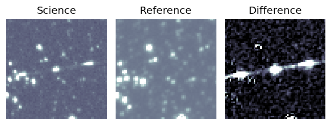
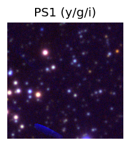
TESS: Sectors [ 91 92 116 118]
PS1: 1 source in 3 arcsec Closest: d = 1.21 arcsec photoz=0.51+/-0.04 peak abs mag = -27.61
LegacySurvey: 0 sources in 3 arcsec
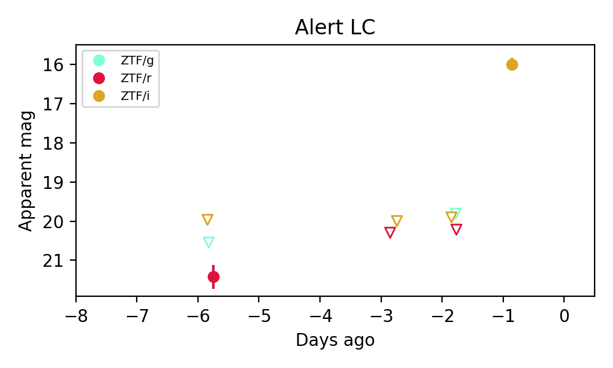
Extinction-corrected gr color:
From alerts: -1.67 +/- 99 mag
Extinction-corrected ri color:
From alerts: 1.03 +/- 99 mag
Rise Rate:
i: 3.9 mag/day
Fade Rate:
7. [ZTF] ZTF26abjkfjv (Afterglow?) [Back to Top] [Share] [Trigger Swift] [Fritz Alert] [Fritz Source] [Lasair]RA, Dec: 315.55828, -7.04403 21h 2m13.99s, -7d-2m-38.51sGalactic (l, b): 42.13623, -32.21387 ext(g-r) = 0.098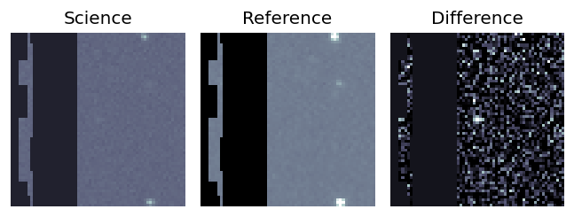
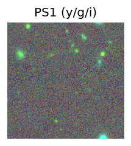
TESS: Sectors [ 55 81 92 116]
PS1: 0 sources in 3 arcsec
LegacySurvey: 1 sources in 3 arcsec Closest: d = 8.21 arcsec, 263.3 deg (east of north) photoz=1.13 (68% bounds 0.93, 1.36), type=REX peak abs mag = -25.6 (68% bounds -25.08, -26.11)
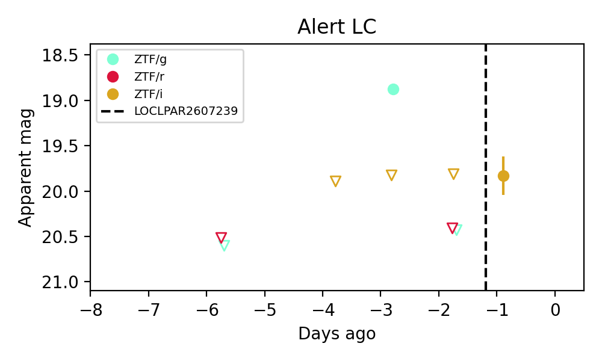
Extinction-corrected gi color:
From alerts: -1.1 +/- 99 mag
Rise Rate:
g: 0.59 mag/day
Fade Rate:
g: 1.43 mag/day
8. [ZTF] ZTF26abjkwkh (Afterglow?) [Back to Top] [Share] [Trigger Swift] [Fritz Alert] [Fritz Source] [Lasair]RA, Dec: 260.616, 60.99119 17h22m27.84s, 60d59m28.29sGalactic (l, b): 90.06213, 34.205 ext(g-r) = 0.024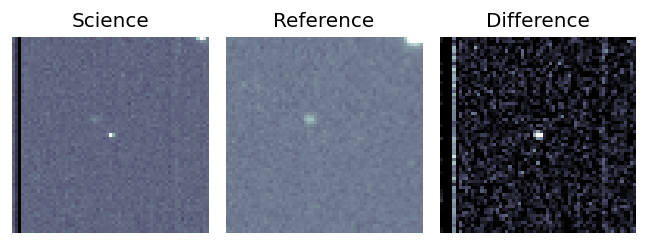
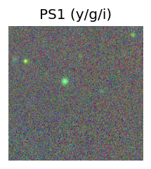
TESS: Sectors [ 14 15 16 17 18 19 20 21 22 23 24 25 26 40 41 47 48 49
50 51 52 53 54 55 56 57 58 59 60 73 74 75 76 77 78 79
80 81 83 84 85 86 117 118 119 120 121]
SDSS (<15 kpc):Found SDSS phot-z: z=0.40; peak abs mag = -22.20
PS1: 0 sources in 3 arcsec
LegacySurvey: 1 sources in 3 arcsec Closest: d = 7.19 arcsec, 44.6 deg (east of north) photoz=0.48 (68% bounds 0.42, 0.55), type=REX peak abs mag = -22.62 (68% bounds -22.25, -22.99)
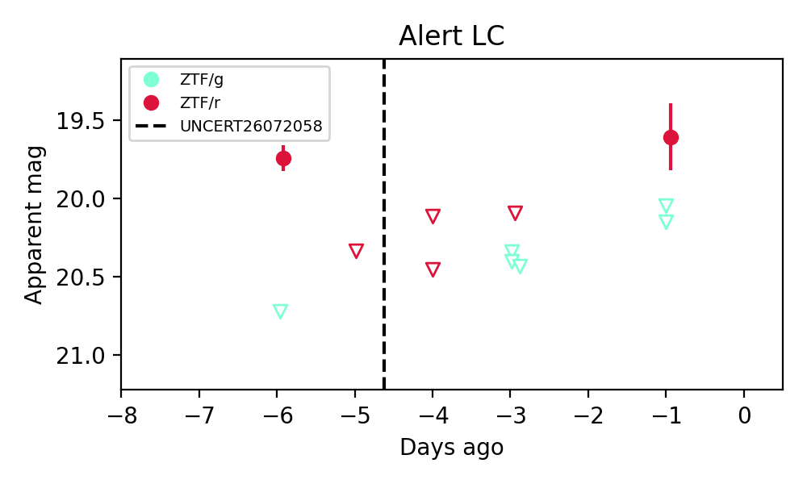
Extinction-corrected gr color:
From alerts: 0.52 +/- 99 mag
Rise Rate:
r: 0.42 mag/day
Fade Rate:
r: 0.63 mag/day
9. [ZTF] ZTF26abjlpck (FBOT?) [Back to Top] [Share] [Trigger Swift] [Fritz Alert] [Fritz Source] [Lasair]RA, Dec: 277.48531, -25.86296 18h29m56.47s, -25d-51m-46.67sGalactic (l, b): 7.46604, -7.11738 WARNING: -2.6 deg from ecliptic plane ext(g-r) = 0.411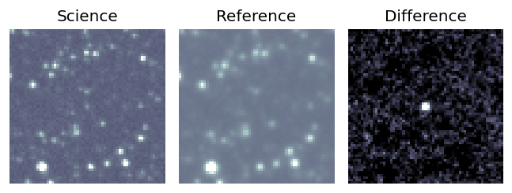
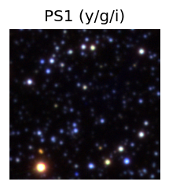
TESS: Sectors [ 91 92 116]
PS1: 1 source in 3 arcsec Closest: d = 0.17 arcsec photoz=0.12+/-0.01 peak abs mag = -21.01
LegacySurvey: 0 sources in 3 arcsec
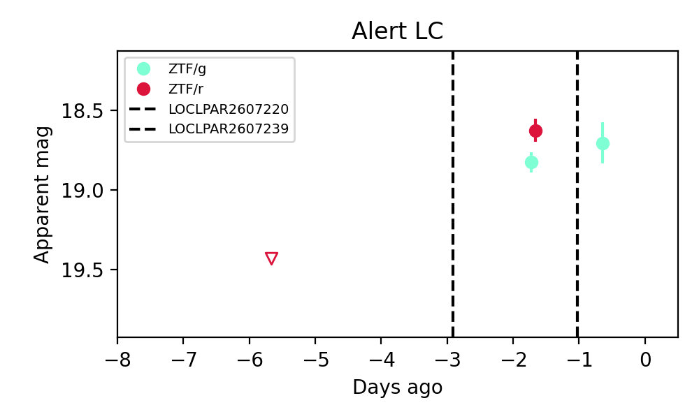
Extinction-corrected gr color:
From alerts: -0.21 +/- 0.1 mag
Rise Rate:
g: 0.11 mag/day
r: 0.2 mag/day
Fade Rate:
10. [ZTF] ZTF26abjmlxe (Afterglow?) [Back to Top] [Share] [Trigger Swift] [Fritz Alert] [Fritz Source] [Lasair]RA, Dec: 282.57391, 43.29765 18h50m17.74s, 43d17m51.52sGalactic (l, b): 72.83938, 18.41738 ext(g-r) = 0.083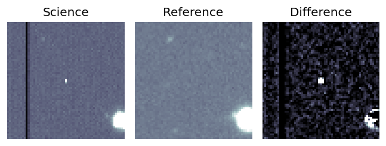
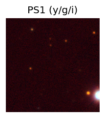
TESS: Sectors [ 14 26 40 41 53 74 80 81 118 120]
PS1: 0 sources in 3 arcsec
LegacySurvey: 1 sources in 3 arcsec Closest: d = 2.29 arcsec, 282.7 deg (east of north) photoz=0.85 (68% bounds 0.66, 0.98), type=REX peak abs mag = -24.62 (68% bounds -23.94, -24.99)
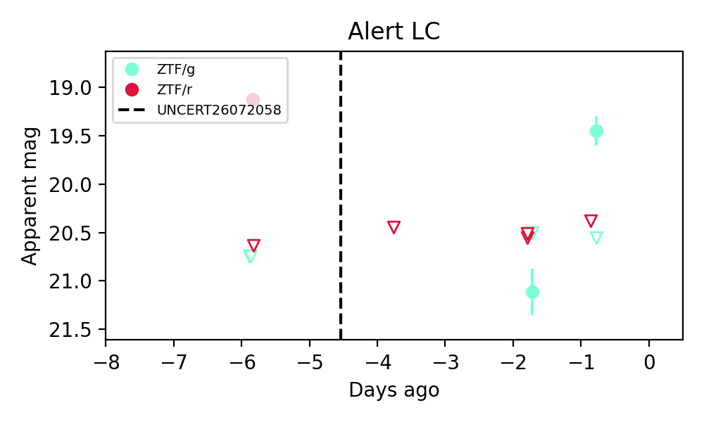
Extinction-corrected gr color:
From alerts: -1.01 +/- 99 mag
Rise Rate:
g: 1.76 mag/day
r: 0.5 mag/day
Fade Rate:
r: 81.99 mag/day
11. [ZTF] ZTF26abjmogj (FBOT?) [Back to Top] [Share] [Trigger Swift] [Fritz Alert] [Fritz Source] [Lasair]RA, Dec: 293.25778, 15.9232 19h33m1.87s, 15d55m23.52sGalactic (l, b): 51.80358, -1.68313 ext(g-r) = 2.158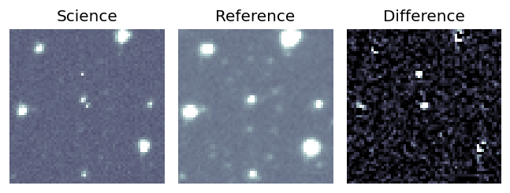
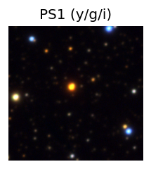
TESS: Sectors [ 14 40 54 81 119]
PS1: 1 source in 3 arcsec Closest: d = 3.16 arcsec photoz=0.01+/-0.06 peak abs mag = -21.14
LegacySurvey: 0 sources in 3 arcsec
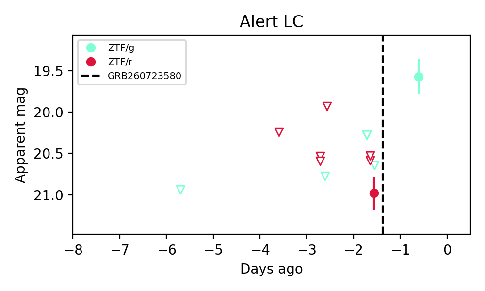
Extinction-corrected gr color:
From alerts: -2.49 +/- 99 mag
Rise Rate:
g: 1.14 mag/day
Fade Rate:
12. [ZTF] ZTF26abjmsrm (FBOT?) [Back to Top] [Share] [Trigger Swift] [Fritz Alert] [Fritz Source] [Lasair]RA, Dec: 282.93576, 16.29982 18h51m44.58s, 16d17m59.34sGalactic (l, b): 47.55202, 7.28707 ext(g-r) = 0.378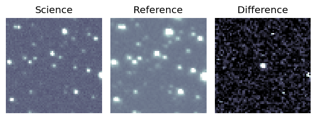
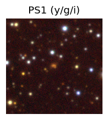
TESS: Sectors [ 26 40 53 54 80 119]
PS1: 1 source in 3 arcsec Closest: d = 0.59 arcsec photoz=0.17+/-0.08 peak abs mag = -21.26
LegacySurvey: 0 sources in 3 arcsec
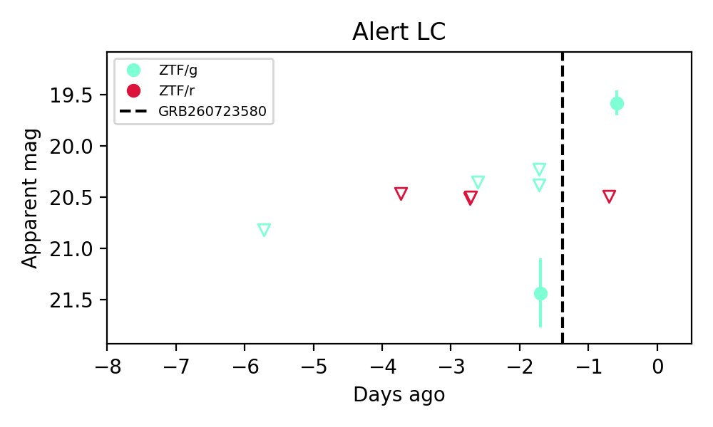
Extinction-corrected gr color:
From alerts: -1.29 +/- 99 mag
Rise Rate:
g: 1.68 mag/day
Fade Rate:
13. [ZTF] ZTF26abjmsrv (Afterglow?) [Back to Top] [Share] [Trigger Swift] [Fritz Alert] [Fritz Source] [Lasair]RA, Dec: 304.53632, 25.63154 20h18m8.72s, 25d37m53.54sGalactic (l, b): 65.58178, -5.68943 ext(g-r) = 0.813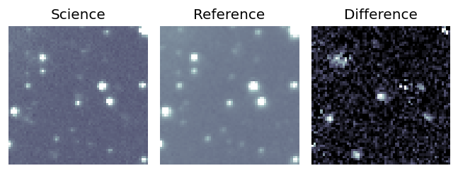
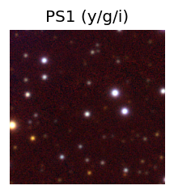
TESS: Sectors [ 14 41 54 55 81 82 120]
PS1: 0 sources in 3 arcsec
LegacySurvey: 0 sources in 3 arcsec
Extinction-corrected gr color:
From alerts: 0.47 +/- 99 mag
Extinction-corrected gi color:
From alerts: -0.92 +/- 99 mag
Rise Rate:
g: 0.52 mag/day
Fade Rate:
g: 4.81 mag/day
14. [ZTF] ZTF26abjnelz (Afterglow?) [Back to Top] [Share] [Trigger Swift] [Fritz Alert] [Fritz Source] [Lasair]RA, Dec: 287.0903, 46.3112 19h 8m21.67s, 46d18m40.32sGalactic (l, b): 76.99924, 16.52118 ext(g-r) = 0.076
TESS: Sectors [ 14 15 26 40 41 53 54 55 74 75 80 82 119 120]
PS1: 0 sources in 3 arcsec
LegacySurvey: 1 sources in 3 arcsec Closest: d = 5.38 arcsec, 329.2 deg (east of north) photoz=1.02 (68% bounds 0.87, 1.15), type=REX peak abs mag = -25.76 (68% bounds -25.33, -26.06)
Extinction-corrected gr color:
From alerts: 0.95 +/- 99 mag
Rise Rate:
g: 2.16 mag/day
r: 0.85 mag/day
Fade Rate:
g: 2.25 mag/day
15. [ZTF] ZTF26abjofsh (FBOT?) [Back to Top] [Share] [Trigger Swift] [Fritz Alert] [Fritz Source] [Lasair]RA, Dec: 339.81302, 1.36494 22h39m15.13s, 1d21m53.79sGalactic (l, b): 69.42581, -47.30216 ext(g-r) = 0.084
TESS: Sectors [42 56 70 82 92]
PS1: 0 sources in 3 arcsec
LegacySurvey: 1 sources in 3 arcsec Closest: d = 0.84 arcsec, 248.8 deg (east of north) photoz=1.14 (68% bounds 0.8, 1.93), type=REX peak abs mag = -24.37 (68% bounds -23.4, -25.75)
Extinction-corrected gr color:
From alerts: -0.05 +/- 99 mag
Rise Rate:
r: 0.42 mag/day
Fade Rate:
16. [ZTF] ZTF26abjojlx (FBOT?) [Back to Top] [Share] [Trigger Swift] [Fritz Alert] [Fritz Source] [Lasair]RA, Dec: 313.85822, 27.43435 20h55m25.97s, 27d26m3.68sGalactic (l, b): 72.04133, -11.34563 ext(g-r) = 0.202
TESS: Sectors [ 15 41 55 82 120 121]
PS1: 1 source in 3 arcsec Closest: d = 5.25 arcsec photoz=0.71+/-0.14 peak abs mag = -24.03
LegacySurvey: 0 sources in 3 arcsec
Extinction-corrected gr color:
From alerts: 0.98 +/- 99 mag
Rise Rate:
r: 0.92 mag/day
Fade Rate:
17. [ZTF] ZTF26abjotjq (Afterglow?) [Back to Top] [Share] [Trigger Swift] [Fritz Alert] [Fritz Source] [Lasair]RA, Dec: 344.50969, 2.84705 22h58m2.33s, 2d50m49.37sGalactic (l, b): 76.10877, -49.43177 ext(g-r) = 0.08
TESS: Sectors [42 56 70 83 92]
SDSS (<15 kpc):Found SDSS phot-z: z=0.47; peak abs mag = -23.04
PS1: 0 sources in 3 arcsec
LegacySurvey: 1 sources in 3 arcsec Closest: d = 2.04 arcsec, 215.3 deg (east of north) photoz=1.15 (68% bounds 0.99, 1.37), type=PSF peak abs mag = -25.26 (68% bounds -24.86, -25.73)
Extinction-corrected gr color:
From alerts: -0.58 +/- 99 mag
Extinction-corrected ri color:
From alerts: 1.07 +/- 99 mag
Rise Rate:
r: 1.12 mag/day
Fade Rate:
r: 0.45 mag/day
18. [ZTF] ZTF26abjphhv (FBOT?) [Back to Top] [Share] [Trigger Swift] [Fritz Alert] [Fritz Source] [Lasair]RA, Dec: 331.12504, 57.38384 22h 4m30.01s, 57d23m1.82sGalactic (l, b): 101.8975, 1.4954 ext(g-r) = 1.671
TESS: Sectors [16 17 56 57 76 77 83 84]
PS1: 1 source in 3 arcsec Closest: d = 4.03 arcsec photoz=0.09+/-0.18 peak abs mag = -22.86
LegacySurvey: 0 sources in 3 arcsec
Extinction-corrected gr color:
From alerts: 0.37 +/- 99 mag
Rise Rate:
r: 1.86 mag/day
Fade Rate:
19. [ZTF] ZTF26abjpizl (FBOT?) [Back to Top] [Share] [Trigger Swift] [Fritz Alert] [Fritz Source] [Lasair]RA, Dec: 17.25946, -1.27351 1h 9m2.27s, -1d-16m-24.62sGalactic (l, b): 132.9373, -63.80283 ext(g-r) = 0.07
TESS: Sectors [ 3 30 42 43 70 97]
PS1: 0 sources in 3 arcsec
LegacySurvey: 1 sources in 3 arcsec Closest: d = 1.49 arcsec, 104.9 deg (east of north) photoz=1.04 (68% bounds 0.9, 1.2), type=REX peak abs mag = -26.26 (68% bounds -25.87, -26.66)
Extinction-corrected gr color:
From alerts: -1.06 +/- 99 mag
Rise Rate:
r: 2.62 mag/day
Fade Rate:
20. [ZTF] ZTF26abjpqoz (FBOT?) [Back to Top] [Share] [Trigger Swift] [Fritz Alert] [Fritz Source] [Lasair]RA, Dec: 20.35321, -1.42423 1h21m24.77s, -1d-25m-27.24sGalactic (l, b): 139.80574, -63.30973 ext(g-r) = 0.051
TESS: Sectors [ 3 30 42 43 70 97]
SDSS (<15 kpc):Found SDSS phot-z: z=0.07; peak abs mag = -18.83
NED (10 arcsec):Found NED spec-z: z=0.10; peak abs mag = -19.54
PS1: 0 sources in 3 arcsec
LegacySurvey: 1 sources in 3 arcsec Closest: d = 1.53 arcsec, 174.1 deg (east of north) photoz=0.07 (68% bounds 0.05, 0.08), type=SER peak abs mag = -18.58 (68% bounds -17.87, -18.92)
Extinction-corrected gr color:
From alerts: -0.44 +/- 99 mag
Rise Rate:
r: 1.8 mag/day
Fade Rate:
21. [ZTF] ZTF26abjqbad (FBOT?) [Back to Top] [Share] [Trigger Swift] [Fritz Alert] [Fritz Source] [Lasair]RA, Dec: 7.54124, -4.92374 0h30m9.90s, -4d-55m-25.45sGalactic (l, b): 109.13174, -67.22376 ext(g-r) = 0.048
TESS: Sectors [ 3 30 42 43 70]
PS1: 0 sources in 3 arcsec
LegacySurvey: 1 sources in 3 arcsec Closest: d = 1.32 arcsec, 55.3 deg (east of north) photoz=0.62 (68% bounds 0.42, 1.15), type=PSF peak abs mag = -23.04 (68% bounds -22.0, -24.68)
Extinction-corrected gr color:
From alerts: -0.76 +/- 99 mag
Extinction-corrected ri color:
From alerts: 1.8 +/- 99 mag
Rise Rate:
g: 0.69 mag/day
Fade Rate:
22. [ZTF] ZTF26abjqgva (FBOT?) [Back to Top] [Share] [Trigger Swift] [Fritz Alert] [Fritz Source] [Lasair]RA, Dec: 10.1723, 12.10685 0h40m41.35s, 12d 6m24.65sGalactic (l, b): 118.78351, -50.6783 ext(g-r) = 0.083
TESS: Sectors [42 43 70]
SDSS (<15 kpc):Found SDSS phot-z: z=0.26; peak abs mag = -21.51
PS1: 0 sources in 3 arcsec
LegacySurvey: 1 sources in 3 arcsec Closest: d = 1.51 arcsec, 292.8 deg (east of north) photoz=0.99 (68% bounds 0.57, 1.29), type=REX peak abs mag = -24.68 (68% bounds -23.19, -25.4)
Extinction-corrected gr color:
From alerts: -1.26 +/- 99 mag
Extinction-corrected ri color:
From alerts: 1.63 +/- 99 mag
Rise Rate:
g: 1.25 mag/day
Fade Rate:
23. [ZTF] ZTF26abjqyec (FBOT?) [Back to Top] [Share] [Trigger Swift] [Fritz Alert] [Fritz Source] [Lasair]RA, Dec: 24.58322, 17.22143 1h38m19.97s, 17d13m17.14sGalactic (l, b): 138.64326, -44.21501 ext(g-r) = 0.126
TESS: Sectors [17 42 43 70]
SDSS (<15 kpc):Found SDSS phot-z: z=0.09; peak abs mag = -19.58
PS1: 0 sources in 3 arcsec
LegacySurvey: 1 sources in 3 arcsec Closest: d = 1.51 arcsec, 240.7 deg (east of north) photoz=0.14 (68% bounds 0.06, 0.2), type=EXP peak abs mag = -20.46 (68% bounds -18.72, -21.44)
Extinction-corrected gr color:
From alerts: -0.72 +/- 99 mag
Extinction-corrected gi color:
From alerts: 1.83 +/- 99 mag
Extinction-corrected ri color:
From alerts: 1.81 +/- 99 mag
Rise Rate:
i: 1.0 mag/day
Fade Rate:
24. [ZTF] ZTF26abjriky (FBOT?) [Back to Top] [Share] [Trigger Swift] [Fritz Alert] [Fritz Source] [Lasair]RA, Dec: 9.24817, 6.7077 0h36m59.56s, 6d42m27.71sGalactic (l, b): 116.51155, -55.98387 WARNING: 2.5 deg from ecliptic plane ext(g-r) = 0.023
TESS: Sectors [42 43 70]
SDSS (<15 kpc):Found SDSS phot-z: z=0.42; peak abs mag = -22.99
PS1: 0 sources in 3 arcsec
LegacySurvey: 1 sources in 3 arcsec Closest: d = 2.17 arcsec, 142.7 deg (east of north) photoz=0.42 (68% bounds 0.39, 0.45), type=REX peak abs mag = -22.96 (68% bounds -22.78, -23.15)
Extinction-corrected gr color:
From alerts: -1.02 +/- 99 mag
Extinction-corrected gi color:
From alerts: 1.64 +/- 99 mag
Extinction-corrected ri color:
From alerts: 1.61 +/- 99 mag
Rise Rate:
i: 0.72 mag/day
Fade Rate:
25. [ZTF] ZTF26abjrkke (FBOT?) [Back to Top] [Share] [Trigger Swift] [Fritz Alert] [Fritz Source] [Lasair]RA, Dec: 9.19676, -2.87646 0h36m47.22s, -2d-52m-35.25sGalactic (l, b): 114.08286, -65.49618 ext(g-r) = 0.034
TESS: Sectors [ 3 30 42 43 70 97]
PS1: 0 sources in 3 arcsec
LegacySurvey: 1 sources in 3 arcsec Closest: d = 1.03 arcsec, 145.2 deg (east of north) photoz=0.77 (68% bounds 0.72, 0.82), type=EXP peak abs mag = -24.09 (68% bounds -23.94, -24.27)
Extinction-corrected gr color:
From alerts: 0.82 +/- 99 mag
Extinction-corrected gi color:
From alerts: 1.13 +/- 99 mag
Extinction-corrected ri color:
From alerts: 1.21 +/- 99 mag
Rise Rate:
i: 0.45 mag/day
Fade Rate:
26. [ZTF] ZTF26abjrvpg (FBOT?) [Back to Top] [Share] [Trigger Swift] [Fritz Alert] [Fritz Source] [Lasair]RA, Dec: 338.5414, -11.37641 22h34m9.94s, -11d-22m-35.08sGalactic (l, b): 52.24091, -54.15085 WARNING: -2.2 deg from ecliptic plane ext(g-r) = 0.056
TESS: Sectors [42 92]
PS1: 0 sources in 3 arcsec
LegacySurvey: 1 sources in 3 arcsec Closest: d = 2.40 arcsec, 8.5 deg (east of north) photoz=0.15 (68% bounds 0.11, 0.23), type=REX peak abs mag = -19.74 (68% bounds -18.89, -20.72)
Extinction-corrected gi color:
From alerts: 0.3 +/- 99 mag
Extinction-corrected ri color:
From alerts: 0.87 +/- 99 mag
Rise Rate:
i: 0.27 mag/day
Fade Rate: